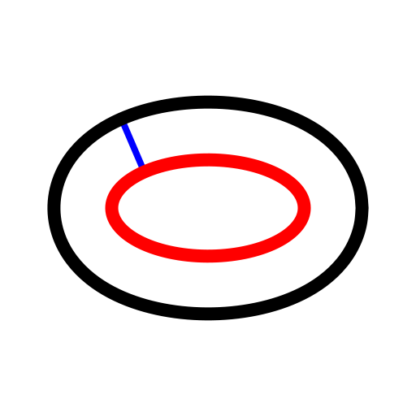

Parallel Curve (with Distance)
Toolbar / Icon:


Menu: Draw > Ellipse > Parallel Curve (with Distance)
Shortcut: E, C
Commands: ellipseoffset | ec
Description:
With this tool you can create one or multiple parallel curves with a given
distance to an existing ellipse.
Procedure:
- Enter the distance of the parallel curves from the original base ellipse
in the options toolbar.
- Enter the number of parallel curves to create in the options
toolbar.
- Click the base ellipse. The concentric curve(s) are created on that side
on which the mouse cursor is located while clicking the base ellipse.